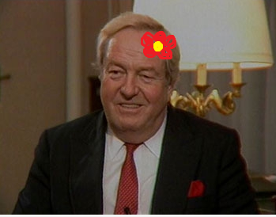
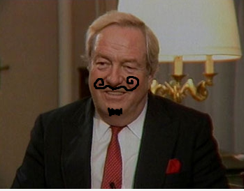
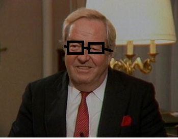

Born and raised as a Roman Catholic in La Trinité-sur-Mer, Le Pen first attended the Jesuit high school François Xavier in Vannes then Dupuy-de-Lôme in Lorient. After being dismissed from it in April for indiscipline, he briefly attended the high school Jules-Simon in Vannes before being dismissed again for indiscipline. Le Pen finally graduated from Claude-Debussy high school in Saint-Germain-en-Laye in 1947. He then entered the faculty of law in Paris and graduated from it in 1949. After his time in the military, he studied political science and law at Panthéon-Assas University. His graduate thesis, submitted in 1971 by him and Jean-Loup Vincent, was titled Le courant anarchiste en France depuis 1945 or "The anarchist movement in France since 1945".

Jane Dewit
Yoga teacher.
The youngest daughter of Aung San, Father of the Nation of modern-day Myanmar, and Khin Kyi, Aung San Suu Kyi was born in Rangoon, British Burma. After graduating from the University of Delhi in 1964 and the University of Oxford in 1968, she worked at the United Nations for three years. She married Michael Aris in 1972, and gave birth to two children. Aung San Suu Kyi rose to prominence in the 1988 Uprisings, and became the General Secretary of the National League for Democracy (NLD), which she had newly formed with the help of several retired army officials who criticized the military junta. In the 1990 elections, NLD won 81% of the seats in Parliament, but the results were nullified, as the military refused to hand over power, resulting in an international outcry. She had, however, already been detained under house arrest before the elections. She remained under house arrest for almost 15 of the 21 years from 1989 to 2010, becoming one of the world's most prominent political prisoners.

Leonard Taft
Aqua Fit teacher.
Taft was born in Cincinnati in 1857. His father, Alphonso Taft, was a U.S. Attorney General and Secretary of War. Taft attended Yale and was a member of Skull and Bones secret society like his father and after becoming a lawyer was appointed a judge while still in his twenties. He continued a rapid rise, being named Solicitor General and as a judge of the Sixth Circuit Court of Appeals. In 1901, President William McKinley appointed Taft civilian governor of the Philippines. In 1904, Roosevelt made him Secretary of War, and he became Roosevelt's hand-picked successor. Despite his personal ambition to become chief justice, Taft declined repeated offers of appointment to the Supreme Court of the United States, believing his political work to be more important.

Marc Hawking
Fitness teacher.
Hawking was a fellow of the Royal Society (FRS), a lifetime member of the Pontifical Academy of Sciences, and a recipient of the Presidential Medal of Freedom, the highest civilian award in the United States. In 2002, Hawking was ranked number 25 in the BBC's poll of the 100 Greatest Britons. He was the Lucasian Professor of Mathematics at the University of Cambridge between 1979 and 2009 and achieved commercial success with works of popular science in which he discusses his own theories and cosmology in general. His book A Brief History of Time appeared on the British Sunday Times best-seller list for a record-breaking 237 weeks.